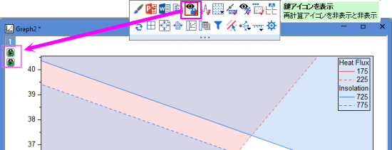
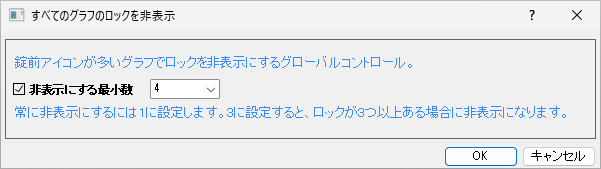

最終更新日：2026/3/26
データセレクタを使用して解析を実行するデータサブレンジを選択すると、解析マーカー が表示されます。
が表示されます。
解析マーカーを非表示またはサイズを変更するには
グラフ上で解析を実行する、または何らかの解析の出力であるデータをプロットする場合、グラフに緑色の鍵のアイコンが表示され、再計算モードが表示されます。アイコンはエクスポートまたは印刷されませんが、邪魔になる場合もあります。
ページレベルのミニツールバーにある鍵アイコンを表示表示ボタンを使って、アクティブ化されたグラフの再計算ロックを非表示にすることができます。 
または、表示: 表示様式: 錠前アイコンメニューを選択します。
再計算のアイコンをグローバルにオフにするには

ダイアログでは、数値を入力でき、グラフ内の錠前アイコンの数がこの値を超えると、そのグラフのすべての錠前アイコンが自動的に非表示になります。
キーワード:ピンク, 削除, 矢印, マゼンタ, 紫, プロット, データ, ロック